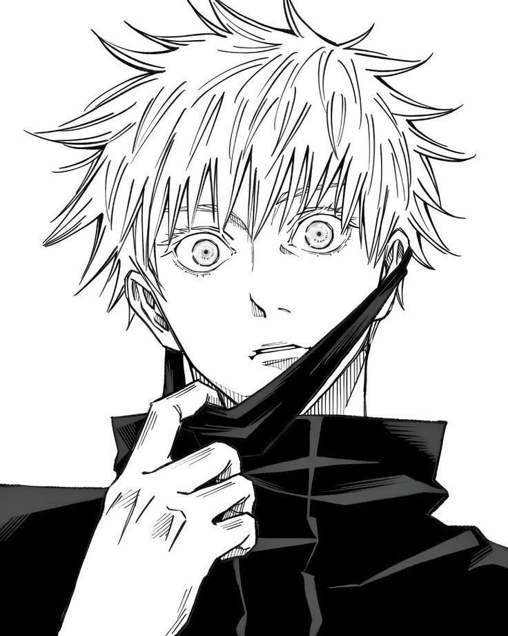

Aprendiendo programacion para en un futuro poder hacer paginas que ayuden a solucionar necesidades
Experiencias
- Programa 4.0 - 2023

Sobre mi
Soy Mati y estoy empezando en el mundo de la programación. Durante mucho tiempo sentí que estaba en automático, pero decidí cambiar eso y empezar a construir algo propio. Me interesa crear automatizaciones y herramientas que ayuden en el día a día, especialmente para las personas que tengo cerca. Hoy estoy enfocado en aprender, mejorar y usar la tecnología para generar un impacto real, aunque sea pequeño.
Proyectos en progreso
Bot de recordatorio de turnos médicos
Automatización pensada para enviar recordatorios por WhatsApp con información sobre turnos médicos (fecha, lugar y tipo de consulta), con el objetivo de ayudar a organizarse mejor en el día a día.
Ver másWeb de truco
Proyecto para desarrollar una página donde poder jugar al truco con amigos de forma online, enfocada en una experiencia simple y accesible.
Ver másRecomendador de música
Página donde el usuario puede seleccionar sus gustos musicales y recibir recomendaciones personalizadas de canciones.
Ver más